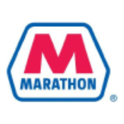
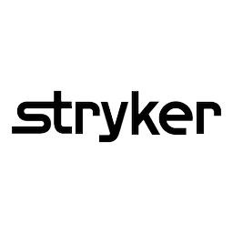
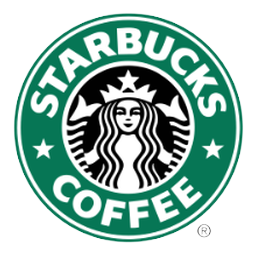
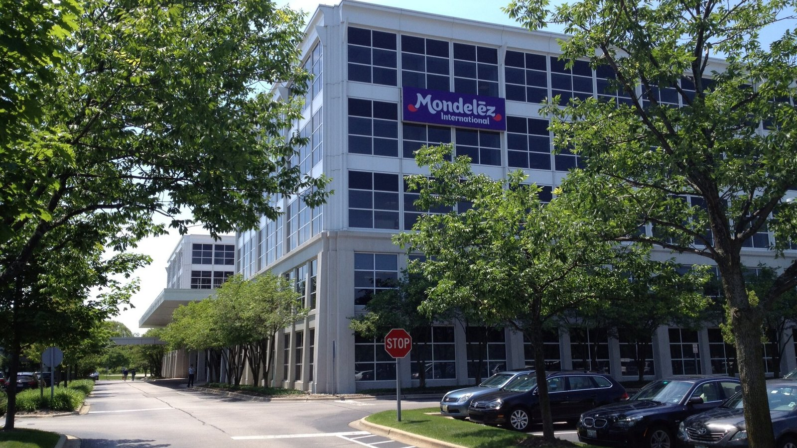
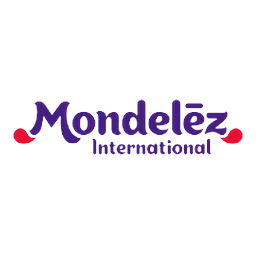
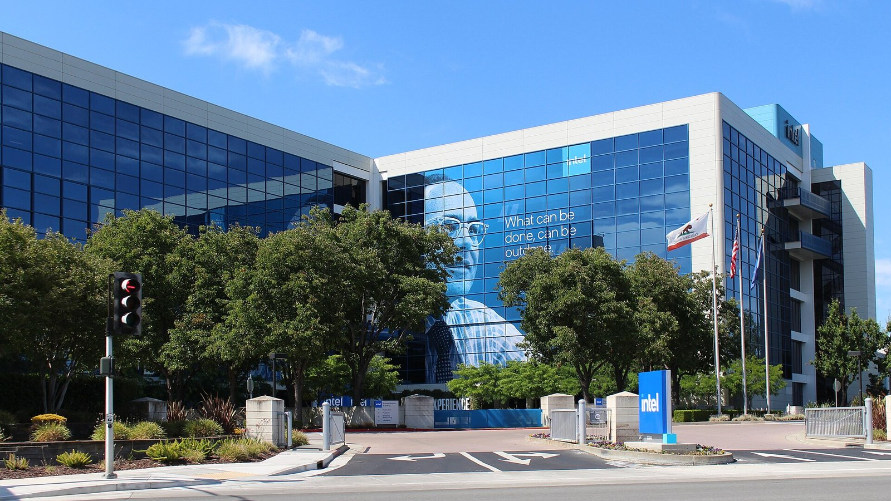
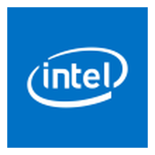
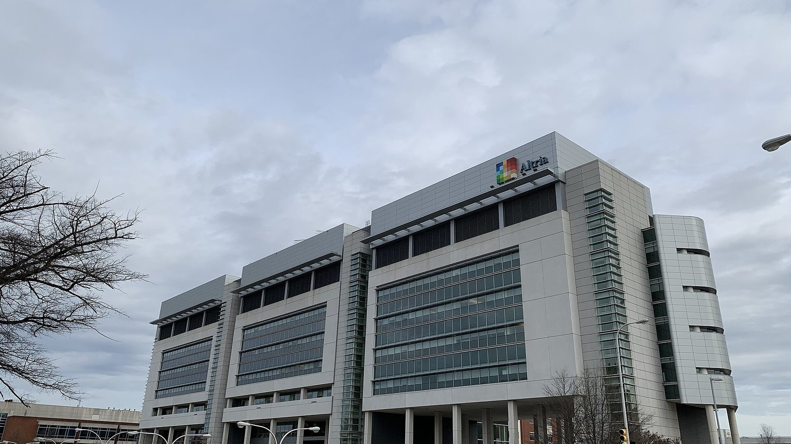

News
Analysen, Erklärstücke und Einordnungen zu Dividendenaktien, Kennzahlen, Quellensteuer und Depot, geschrieben für Privatanleger in Deutschland.

Thema des Tages Quartalszahlen · 30.10.2026, 18:20 Uhr
Sanofi wächst im dritten Quartal kräftig und hebt Jahresprognose an
Sanofi legt die Geschäftszahlen für das dritte Quartal 2026 vor. Der Umsatz steigt zweistellig, getrieben vor allem durch Dupixent und neue Medikamente.
Artikel lesen →Kurzmeldungen
- Quartalszahlen · 30.10.2026, 18:08 UhrRegeneron Pharmaceuticals steigert bereinigten Q3-Gewinn auf 20,07 US-Dollar je Aktie
- Quartalszahlen · 30.10.2026, 18:08 UhrExelon übertrifft mit 0,87 US-Dollar bereinigtem Q3-Gewinn Erwartungen
- Quartalszahlen · 30.10.2026, 18:08 UhrChurch & Dwight steigert bereinigten Q3-Gewinn auf 0,92 US-Dollar je Aktie

Quartalszahlen · 30.10.2026, 18:08 UhrCboe Global Markets erzielt im Q3 2026 Rekordgewinn je Aktie von 4,08 US-Dollar- Quartalszahlen · 30.10.2026, 18:07 UhrVeralto steigert bereinigten Q3-Gewinn auf 1,18 US-Dollar je Aktie und hebt Jahresprognose an
- Übernahme · 30.10.2026, 18:07 UhrValero Energy übernimmt LyondellBasell-Raffinerie für 320,5 Millionen US-Dollar

Management · 30.10.2026, 18:07 UhrMarathon Petroleum beruft David E. Constable in den Verwaltungsrat- Quartalszahlen · 30.10.2026, 18:07 UhrIngersoll Rand steigert bereinigten Q3-Gewinn auf 1,07 US-Dollar je Aktie und hebt Prognose an
- Quartalszahlen · 30.10.2026, 18:07 UhrDigital Realty steigert Q3-Gewinn je Aktie auf 0,48 US-Dollar und hebt Prognose an
- Quartalszahlen · 30.10.2026, 18:07 UhrAlliant Energy steigert Q3-Gewinn auf 1,52 US-Dollar je Aktie und erhoeht Dividendenziel
- Quartalszahlen · 30.10.2026, 18:06 UhrWeyerhaeuser steigert bereinigtes EBITDA im Q3 2026 auf 248 Millionen US-Dollar

Quartalszahlen · 30.10.2026, 18:06 UhrStryker steigert bereinigten Q3-Gewinn je Aktie auf 3,52 US-Dollar- Quartalszahlen · 30.10.2026, 18:06 UhrSandisk erzielt im Q1 2027 Nettogewinn von 8,1 Milliarden US-Dollar
- Quartalszahlen · 30.10.2026, 18:06 UhrRepublic Services erhöht Q3-Gewinn je Aktie auf 1,93 US-Dollar
- Quartalszahlen · 30.10.2026, 18:05 UhrTwilio übertrifft im Q3 2026 Erwartungen und hebt Jahresprognose an
- Quartalszahlen · 30.10.2026, 18:05 UhrResMed steigert Q1-Gewinn je Aktie auf 2,92 US-Dollar und erhöht Dividende
Weitere Artikel

Quartalszahlen · 30.10.2026, 10:02 Uhr
BP senkt Finanzverbindlichkeiten und steigert bereinigten Gewinn deutlich
BP legt die Zahlen für das dritte Quartal 2026 vor, reduziert Schulden stark auf 44,3 Milliarden Dollar und hält an der Dividende fest.

Jahresbericht · 29.10.2026, 23:52 Uhr
Starbucks steigert Umsatz im Geschäftsjahr 2026 auf 37,9 Milliarden Dollar
Starbucks legt den Geschäftsbericht für das Jahr 2026 vor. Der Umsatz legte zu, während das Management den Umbau der China-Sparte vorantreibt.


Quartalszahlen · 29.10.2026, 23:46 Uhr
Mondelēz steigert Umsatz und Nettogewinn im dritten Quartal
Mondelēz International legt Zahlen für das dritte Quartal 2026 vor und verzeichnet Zuwächse bei Umsatz und Gewinn.


Quartalszahlen · 29.10.2026, 21:59 Uhr
Intel steigert den Umsatz - Kurs bricht aber ein
Intel verzeichnet im dritten Quartal 2026 ein Umsatzwachstum auf 16,5 Milliarden US-Dollar, während der Nettogewinn rückläufig ist.

Quartalszahlen · 29.10.2026, 14:54 Uhr
Altria steigert bereinigten Gewinn je Aktie im dritten Quartal
Altria veröffentlicht die Zahlen für das dritte Quartal 2026. Der bereinigte Gewinn je Aktie legt zu, während das Nikotinbeutel-Segment wächst.
Quartalszahlen · 29.10.2026, 09:26 Uhr
Microsoft steigert Umsatz im ersten Quartal auf 92,3 Milliarden US-Dollar
Microsoft wächst im Auftaktquartal 2027 deutlich beim Umsatz und Gewinn, angetrieben von starken Cloud-Erlösen und Azure.

Quartalszahlen · 29.10.2026, 09:15 Uhr
Alphabets Rekordumsatz trifft auf Milliardeninvestitionen in KI
Alphabet legt die Zahlen für Q3 2026 vor: Der Umsatz steigt kräftig um 25 %, während massiver Ausbau und hohe Kosten den Free Cashflow belasten.
Halbjahreszahlen · 29.10.2026, 08:22 Uhr
Komatsu hebt Jahresprognose nach Umsatzplus im Halbjahr an
Komatsu steigert im ersten Halbjahr 2026 den Umsatz um 14,1 Prozent auf 2.158,6 Milliarden Yen und hebt die Gesamtjahresprognose an.
Älter
- Sonstige Meldung · 28.10.2026, 19:15 UhrFed belässt Leitzins im Oktober 2026 bei 3,75 bis 4 Prozent
- Quartalszahlen · 28.10.2026, 15:47 UhrUnilever steigert Umsatz auf 13,3 Milliarden Euro und hebt Ausblick an
 Quartalszahlen · 28.10.2026, 15:33 UhrGE Vernova steigert Quartalsumsatz auf 12,6 Milliarden US-Dollar
Quartalszahlen · 28.10.2026, 15:33 UhrGE Vernova steigert Quartalsumsatz auf 12,6 Milliarden US-Dollar- Quartalszahlen · 28.10.2026, 15:18 UhrPing An steigert operatives Ergebnis auf 125,9 Milliarden RMB
 Quartalszahlen · 27.10.2026, 20:20 UhrUPS setzt 22,9 Milliarden um, Sondereffekte drücken das Ergebnis
Quartalszahlen · 27.10.2026, 20:20 UhrUPS setzt 22,9 Milliarden um, Sondereffekte drücken das Ergebnis Quartalszahlen · 27.10.2026, 13:23 UhrBoeing setzt 24,2 Milliarden um und bleibt operativ im Minus
Quartalszahlen · 27.10.2026, 13:23 UhrBoeing setzt 24,2 Milliarden um und bleibt operativ im Minus Quartalszahlen · 27.10.2026, 12:58 UhrCoca-Cola verdient mehr: Umsatz und Konzernergebnis steigen
Quartalszahlen · 27.10.2026, 12:58 UhrCoca-Cola verdient mehr: Umsatz und Konzernergebnis steigen Sonstige Meldung · 27.10.2026, 11:50 UhrMercedes-Benz senkt Ausblick für 2026 wegen China und Kosten
Sonstige Meldung · 27.10.2026, 11:50 UhrMercedes-Benz senkt Ausblick für 2026 wegen China und Kosten Quartalszahlen · 27.10.2026, 10:13 UhrHSBC verdient 9,6 Milliarden vor Steuern und kauft Aktien zurück
Quartalszahlen · 27.10.2026, 10:13 UhrHSBC verdient 9,6 Milliarden vor Steuern und kauft Aktien zurück Quartalszahlen · 27.10.2026, 09:40 UhrNovartis erhöht die Gewinnprognose, neue Medikamente laufen gut
Quartalszahlen · 27.10.2026, 09:40 UhrNovartis erhöht die Gewinnprognose, neue Medikamente laufen gut Zahlen · 26.10.2026, 22:28 UhrVerizon steigert bereinigtes EPS und hebt Jahresziele für 2026 an
Zahlen · 26.10.2026, 22:28 UhrVerizon steigert bereinigtes EPS und hebt Jahresziele für 2026 an- Zahlen · 26.10.2026, 21:48 UhrCoca-Cola hebt die Ziele für Cashflow und Gewinn je Aktie an
Hinweis: Dieser Text dient der allgemeinen Information und ist weder Anlage-, Steuer- noch Rechtsberatung. Kapitalanlagen sind mit Risiken verbunden, bis hin zum Totalverlust.